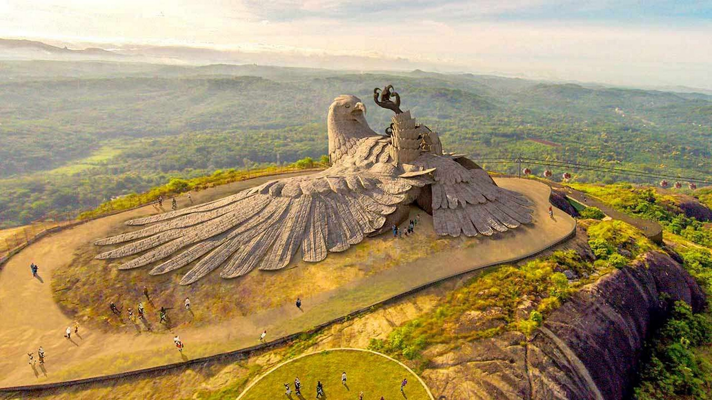

1.Padmanabhaswamy Temple
Visit Padmanabhaswamy Temple

1.Padmanabhaswamy Temple
2.Kanakakunn Palace
3.Chembra Peak

4.Munnar Tea Plantations
 >
> 5.Jatayu Nature Park
>6.Vizhinjam Light House

Kerala stands as a unique blend of natural beauty, rich culture, and social welfare. Its achievements in education, health, and environmental conservation set a benchmark for other states in India. Kerala truly embodies the essence of “God’s Own Country”.Kerala’s environmental conservation efforts are commendable. The state is home to numerous national parks and wildlife sanctuaries. It also leads in sustainable practices, with projects like the Silent Valley National Park, which serves as a testament to its commitment to preserving biodiversity.Kerala’s culture is deeply rooted in a history of diverse influences, from Dravidian and Aryan cultures to Arab and European. The state is famous for its traditional dance forms like Kathakali and Mohiniyattam. The Malayalam literature, enriched by the works of writers like Thakazhi and M.T. Vasudevan Nair, is another cultural treasure of Kerala.Kerala is a beautiful place in India. It has lots of green trees and lovely beaches. The houses of Kerela are colourful and beautiful. The rivers in Kerala are very peaceful. we can go on boats and see the pretty views. Everywhere in Kerala, there are tall coconut trees. The food in Kerala is so much tasty, especially fish curry. People like to visit Kerala to relax on the beaches and eat tasty food. The people in Kerala are very friendly and they have their own special customs and traditions. If we like nature and yummy food then Kerala is a wonderful place to go.